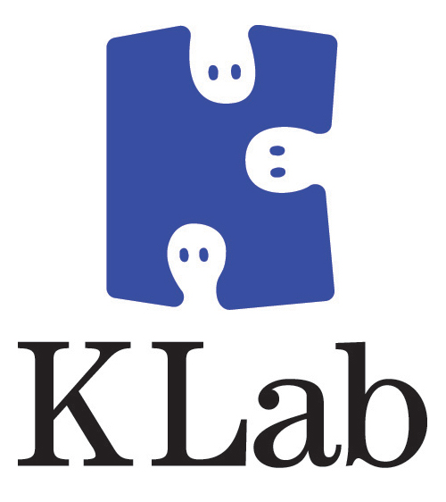
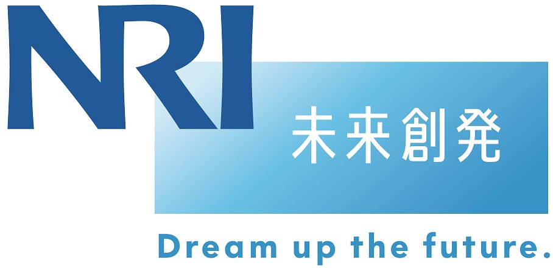
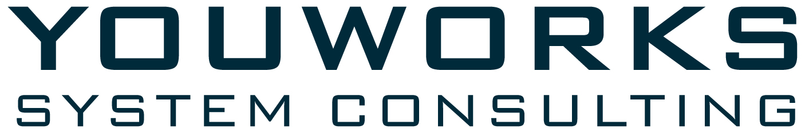
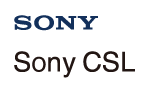

Overview | Teams |Team Intro | Schedule | Equipment | Workshop | Local | Excursion | Results | Problem set | Data
*Selected exceptionally with the highest score among the teams not selected in the Domestic Contest by the host, because of cancellation of one of the selected non-Japan-based teams as well as of budget constraints.
| Team Name | University | Selection |
| 0perasan | The University of Tokyo | Step 1 in the Domestic Contest |
| ~shiokawa | The University of Tokyo | Step 1 in the Domestic Contest |
| negainoido | The University of Tokyo | Step 1 in the Domestic Contest |
| binding.pry | Tokyo Institute of Technology | Step 1 in the Domestic Contest |
| The hik Revolutions | Kyoto University | Step 1 in the Domestic Contest |
| wakaba | The University of Tokyo | Wild card |
| YellowYell | Kyoto University | Step 1 in the Domestic Contest |
| Operasan | Osaka Prefectural College of Technology | Step 1 in the Domestic Contest |
| // ato de namae wo kangaeru | Kyushu University | Step 1 in the Domestic Contest |
| FCCPC_alpha | Tokyo Institute of Technology | Step 1 in the Domestic Contest |
| tanondaZukky | University of Aizu | Step 1 in the Domestic Contest |
| takamoto~u | Nagoya Institute of Technology | Step 1 in the Domestic Contest |
| Running | Osaka University | Step 1 in the Domestic Contest |
| pipe.txt | University of Tsukuba | Step 1 in the Domestic Contest |
| mamushi | Nagoya University | Step 1 in the Domestic Contest |
| Sophinyan | Sophia University | Step 1 in the Domestic Contest |
| power_of_10000 | Keio University | Step 1 in the Domestic Contest |
| Towers of Hanoi | Meiji University | Step 1 in the Domestic Contest |
| Team1 | Tokyo Metropolitan College of Industrial Technology | Step 1 in the Domestic Contest |
| YAMATO# | Kyoto Sangyo University | Step 1 in the Domestic Contest |
| MANDARA | Nara Institute of Science and Technology | Step 1 in the Domestic Contest |
| Q(5) | University of Aizu | Wild card |
| PRESS DOWN TO OPERATE | The University of Electro-Communications | Step 1 in the Domestic Contest |
| tHe_SaitaMa | Saitama University | Step 1 in the Domestic Contest |
| wire stripper | University of Hyogo | Step 1 in the Domestic Contest |
| LabLife! | Tokyo University of Agriculture and Technology | Step 1 in the Domestic Contest |
| furu | Shizuoka University | Step 1 in the Domestic Contest |
| NMS | Ryukoku University | Step 1 in the Domestic Contest |
| NOxus7 | University of Aizu | *Exception |
| A_CuMa-ICaPiCa | Ritsumeikan University | Step 1 in the Domestic Contest |
| ayukorochan | Kanagawa Institute of Technology | Ikebe Memorial Award |
| MgRonald. | Chuo University | Ikebe Memorial Award |
| primrosemoment | Tsuda College | Step 1 in the Domestic Contest |
| naga | Tokyo University of Technology | Ikebe Memorial Award |
| hahaUCCU | National Chiao Tung University | Non-Japan-based Team Selection |
| #define scanf printf | National Taipei University of Technology | Non-Japan-based Team Selection |
| TwT514 | National Taiwan University | Non-Japan-based Team Selection |
| Secret;Weapon | Shanghai Jiao Tong University | Non-Japan-based Team Selection |
| Lavar | Shanghai University | Non-Japan-based Team Selection |
| Old Pucks | Tsinghua University | Non-Japan-based Team Selection |
*Selected exceptionally with the highest score among the teams not selected in the Domestic Contest by the host, because of cancellation of one of the selected non-Japan-based teams as well as of budget constraints.
Sponsors
 |
|  |
|  |
|  |
|  |